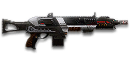

← Back to the FA1 Barrage comparison
Sage Guide · Terran Republic · Shotgun
The free TR starter shotgun. Eight shells, a 2.1-second reload, and a two-pull kill at any range — if all six pellets land. The statistical twin of the NC Mauler S6, with a TR paint job.
The one-line verdict: a free starter shotgun that kills in two pulls at any range — on paper. In real fights the pellets spread, so it rewards getting close, aiming at centre mass, and pulling the trigger exactly when the gun is ready.

The FA1 Barrage · Terran Republic · 8-shell tube magazine
Picture the scene, because you've probably lived it: you're sprinting across a courtyard, an enemy appears, and you do everything at once — pull the trigger while you're still running, then press aim-down-sights (ADS) a split-second later, finger still working. The sight picture snaps in, it looks precise… and your pellets go everywhere except the man in your crosshair. He kills you. It feels like the game cheated. It didn't — here's what actually happened.
You started firing from a sprint, from the hip. Sprinting is the least accurate state in the game: your cone of fire starts at 7.0° — fully maxed, the widest it can ever be. Every pull you fire from the hip sends its whole 3° pellet pattern out of that cone, centred wherever the sprint is pointing.
Then you keep pulling the trigger — and every pull is a fresh pattern. A semi-auto shotgun fires once per click, as fast as 267 ms apart. Firing from the hip while running means each pattern's centre lands wherever the sprint cone points — and pressing ADS mid-stream does not call any of it back. The sight looks precise; the pellets went where the moving gun was pointing, not where the dot is now.
Two timers stack the deck further: your gun needs about 0.3 s to settle after a sprint, and raising the sight itself takes ~0.15 s. Pulling the trigger through all of it means your first half-second of fire is pure confetti — and with only 8 shells in the tube, you cannot afford confetti.
1 · Feet. Let go of sprint (and the trigger, if you're already working it). Stop, or drop into a strafe — anything but a full sprint.
2 · Sight. Press ADS and let the sight come up. This takes a heartbeat — about 0.15 s.
3 · Trigger — one deliberate pull at a time. Now fire, one pull per click, about 267 ms apart, re-aiming between pulls. Starting with the sight settled, the first pattern lands where the dot points — and because the spread never grows, every pull is as accurate as the first, as long as your aim is.
Stop → aim → fire. If you take one habit from this entire page, take this one. You'll practise exactly this rhythm in the trigger drill in section 04.
Four beats, left to right — the same mistake the cards above describe, drawn out.
1 · SprintingYour cone starts maxed at 7.0° — the widest it can ever be.
2 · Trigger heldFiring from the hip while running — every shot adds bloom.
3 · ADS, mid-holdThe sight looks precise — but aiming down sights does not reset bloom.
4 · The sprayBullets fly out of the wide cone you built. The enemy walks away.
Same fight, done right. Each beat has a job, and the order is the whole lesson.
1 · StopLet go of sprint (and the trigger). About 0.3 s for the gun to settle.
2 · AimPress ADS and let the sight come up (~0.15 s).
3 · FireNow fire — from the aimed cone. First shots land where the dot points.
The exception — under ~8 m, skip the whole danceHipfire works, no ADS needed, and stopping is optional. Keep moving, strafe, and let the hipfire ring do the work.
Every enemy infantry has 1,000 health (500 shield + 500 health). Your pull fires 6 pellets of 100 damage each — 600 damage per pull up close, fading to 84 per pellet (504 per pull) at long range. Headshots count 1.5× per pellet, leg shots count less (×0.9). Shots to kill here means trigger pulls — never single pellets. That gives you three numbers worth memorising:
| Range | Damage / pull | Head | Chest | Legs | Chest vs shielded Heavy |
|---|---|---|---|---|---|
| Close · 0–5 m | 100×6 = 600 | 2 | 2 | 2 | 3 |
| Mid · 5–20 m | 92×6 = 552 | 2 | 2 | 3 | 3 |
| Far · 20 m+ | 84×6 = 504 | 2 | 2 | 3 | 3 |
Perfect-accuracy times to kill: 2 headshot pulls ≈ 0.27 s, 2 chest pulls ≈ 0.27 s — at every range, because 6 × 84 is still 504 damage per pull past 20 m. Full-damage output is 2,247 damage per second on paper. In real fights you will land maybe two-thirds of your pellets — so count on 3 pulls, not 2, and keep the third pull in the tube.
Full power to 5 m, then a steady slide to 84 per pellet at 20 m. The gold line shows Flechette Ammunition, which stretches full power to 15 m — at the cost of one pellet per pull (section 06).
One gun, three fighting styles. The right technique changes with distance — use the range finder below to see what your pellets do at any range, then learn the three bands underneath it. The lab counts trigger pulls, not pellets: one pull is six pellets, and the kill is two pulls if they all land.
How to fight hereAim down sights at the centre of the chest. Pull once, re-aim, pull again — two pulls kill if the pellets land.
Aim: centre of the chest, from the hip. Keep moving.
Scoping in costs you time and slows you to 0.75× speed — at arm's length that gets you killed. The FA1 Barrage puts all six pellets inside a 0.42 m circle at 8 m, so the hipfire pattern already covers a torso. Strafe side to side (A/D) while pulling the trigger so you're hard to track.
Aim: centre of the chest. One pull per 267 ms, re-aim between pulls.
This is where the gun earns its keep: full 100 damage to 5 m, and a two-pull kill that holds at every range as long as the pellets land. Aim at the centre of the chest and pull once per 267 ms, re-aiming between pulls. Two pulls kill — the third pull in your tube is for the second enemy, not for finishing the first.
Aim: centre of the chest. Two pulls on paper, three or four in practice.
At 20 m the pattern is already 1.05 m wide — wider than the man you're shooting at — so half your pellets miss a torso and the paper two-pull kill becomes three or four pulls in practice. Take these shots only at stationary or fleeing targets. Otherwise, close the distance behind cover, or fit Flechette or Slug Ammunition (section 06) and treat it as a different gun. Knowing when not to shoot is a skill too.
Your accuracy is decided by two things before skill even enters it: what your body is doing (your stance sets where the pellet pattern lands) and what your finger is doing (one click is one pull, and the gun will not fire again for 267 ms — clicks faster than that do nothing at all). The FA1 Barrage has no fire-mode switch and no bloom to manage: the pellet spread is a constant 3° on every pull, so "firing modes" are something you do with your finger, not a setting on the gun.
| Stance | Pellet spread | What it means for you |
|---|---|---|
| Sprinting | 7.0° cone | Maxed out — the widest the cone can be. The spread is still 3°, but the whole pattern can land anywhere inside a 7° cone around your crosshair. This is the section 01 disaster: never start firing from a sprint. |
| Hipfire, moving | 3.0° | Walking or strafing from the hip. Fine inside ~8 m, where the 0.42 m pattern still covers a torso; past it the pattern's centre drifts and edge pellets leak. |
| Hipfire, standing | 3.0° | Your point-blank default. The 0.42 m ring at 8 m in section 05 is this stance drawn out. |
| Hipfire, crouched | 3.0° | The steadiest hipfire centre you have. Crouch when holding a doorway from the hip. |
| Aimed (ADS), feet planted | 3.0° | Same 3° spread — but now the pattern centres on the dot instead of wandering. This is why section 01's order matters. |
| Aimed (ADS), strafing | 3.0° | Same centred pattern, but you move at 0.75× speed. Strafe between pulls to stay hard to hit; plant your feet for each pull. |
The spread column is the same in every row on purpose. Shotguns have no cone-of-fire bloom: the 3° pellet spread is constant per pull, hip or aimed, first pull or last. What stance changes is where the pattern's centre sits — sprinting throws it widest, aiming down sights puts it on the dot. There is no ADAD rhythm to manage here, because there is nothing growing to reset.
| Mode | How your finger does it | Use it at |
|---|---|---|
| Mashing | Click as fast as you can, no pauses | Nowhere, on purpose. Clicks faster than 267 ms do nothing, and the pulls that do fire go out with the aim still climbing off the chest. |
| Paced pulls — the default | Click once, re-aim, click again — about one pull per 267 ms, never faster | Almost everything, 0–20 m. Every pull is as accurate as the first, because the spread never grows. |
| The 3-pull ADS burst | Three paced pulls down the sights, then stop and re-acquire | Past 10 m, at a target you need dead in one magazine. Three aimed pulls, re-aim, three more. |
A target 8 m away, aiming down sights. Click FIRE once per pull (mouse, touch, or Space with the button focused) — the gun fires one 6-pellet pattern per click, but never faster than one pull every 267 ms: click too soon and the gun is not ready yet, so the click does nothing. Wait a beat between pulls and the aim re-centres; rush them and the pattern's centre climbs off the chest. Pull in groups of 3, re-aim, pull again. This practice window is shared by the whole Sage series, driven by a weapon profile plugged into the window — here the FA1 Barrage's (225 RPM, 6 pellets, 3° spread, target at 8 m) — and the pattern is drawn at true scale from those numbers.
Gun ready — the bar fills in 267 ms after each pull. Clicking before it fills does nothing.
Your 3-pull groups will be graded here — green at 15+ of 18 pellets on target.
Some things are easier to show than to say. Here's what your pellets actually do: how wide the pattern is at 8 metres, what mashing the trigger does to it, and what a magnified sight really changes. The hands-on version — pulling the trigger yourself — is the drill in section 04.
A full-size target 8 m away — an arm's-length room fight. The rings show where the six pellets of one pull land around your aim point (the chest). Sizes are drawn to scale from the gun's real 3° pellet spread.
Read it this way: the 0.42 m ring roughly covers the chest — most pellets hit a target this size, which is why hipfire works point-blank. The Smart-Choke is a trade, not a free lunch: aimed, it tightens the pattern to 0.25 m; from the hip it widens it to 0.50 m, so never hipfire with a choke fitted. And the rings only grow with distance while the man doesn't — at 20 m the standard ring is 1.05 m wide, wider than the target, which is exactly when half your pellets start missing. (Ring sizes use the real geometry: spread diameter = 2 × distance × tan(spread ÷ 2).)
The spread never grows — but your aim does wander. Same 24 pulls, two very different outcomes:
The target pattern is groups of 3 pulls — that's the discipline. Mashing feels faster, but clicks faster than 267 ms do nothing at all, and the pulls that do fire go out while your aim is still climbing from the last one — at 20 m a single pellet's hit chance falls from 55% on the first pull to 18% on the last. Three aimed pulls, re-aim, three more: with a Smart-Choke, Flechette and an extended magazine that kills in one magazine 99% of the time, against a 46% chance to not kill before the reload when spraying. Short groups also leave you shells for the second enemy — and with a 8-shell tube, you have no shells to waste.
No zoom. The target at 15 m is small but the view is wide open — you see the crate, the tower, and the next enemy coming. Fast to aim, nothing blocks your edges. Best inside ~20 m — which is where this gun lives.
Same target, same 15 m — but he looks twice as tall, so placing the pattern on his chest gets much easier. The price: your view narrows to the round window, the crate and tower are gone, and close targets feel fast and huge. Best at 10–20 m.
That's the whole 30-cert decision from section 06 in one picture: 1x for awareness, 2x for precision. Most veterans carry both and swap per base — indoors 1x, open ground 2x.
Attachments are your cheapest upgrades — a sight for 30 certs, a barrel and a magazine for 100 each. On a shotgun the choice is simpler than on a rifle: the spread is constant, there's no bloom to tame, and the gun lives or dies on two things — how wide the pattern is, and how many shells you have. Spend in this order: sight → Smart-Choke → Extended Magazine → stop.
Cert costs below are the FA1 Barrage's own listed prices. The gun fits these attachments and no others: there is no Laser Sight, no Forward Grip, no Suppressor, no Heavy Barrel and no Short Barrel for this gun — if you were looking for one of those, the slot simply doesn't exist.
| Attachment | Certs | What it does |
|---|---|---|
| Iron SightsFree | 0 | No attachment — a clean, unobstructed view. Perfectly usable point-blank. Your only optics decision is whether to spend 30 certs on a clearer 1x dot. |
| RTA Reflex Sight — 1x ReflexGet itFirst, with the Smart-Choke | 30 | The best first certs you'll spend on this gun. A crisp red dot over the open world — see section 05 for why it fits a shotgun so well. |
| HS/NV — 1x Night Vision | 30 | The same 1x dot, but enemies in range glow bright green — which is why you're not using it in daylight. On dark bases and night fights it makes targets pop; everywhere else it blocks your view. |
| MH2 Reflex Sight — 2x | 30 | The target looks twice as big and the dot sits precisely on his chest — see section 05. Good at 10–20 m; close up, the scope window costs you awareness. |
| 3.4x Scopes | 30 | Targets look huge — at 15 m the man overflows the scope window (section 05). Buy this for Slug Ammunition work, not for buckshot: too much glass for a 15 m gun. |
| 4x Scopes | 30 | The same, more so. Pointless on a shotgun — the gun's effective range ends long before the scope becomes useful. |
| Attachment | Certs | What it does |
|---|---|---|
| Smart-ChokeGet itFirst, with the 1x | 100 | Tightens the pattern by 40% while aimed (3° → 1.8°) — the whole point of this gun. Trade-off: the hipfire pattern gets 20% wider (3° → 3.6°), so never hipfire with a choke fitted. |
There is no compensator, suppressor, heavy barrel or short barrel for shotguns. The wiki's attachment tables list only the Smart-Choke in this slot, and the Compensator's own availability page lists no shotguns in any faction.
| Attachment | Certs | What it does |
|---|---|---|
| No Rail AttachmentFree | 0 | Perfectly fine. Nothing is wrong with this slot left empty while you spend your certs on a sight and a Smart-Choke. |
| Extended MagazineGet itSecond, after the sight + choke | 100 | +2 shells in the tube — from 8 to 10. On a shotgun this is worth more than on any rifle: every extra shell is another two-pull kill. Equip time +15%. The single best upgrade once you own a sight and a choke. |
| Comfort Grip | 100 | Faster weapon switching (−30%) and less horizontal recoil (−20%), but vertical recoil rises +20%. The FA1 Barrage's recoil is already small (2.8° per pull), so this is a luxury, not a need. |
| MPL | 100 | Less recoil when firing from the hip (−60%) — a hipfire-only comfort pick. It does nothing while aimed, and the paced 3-pull discipline (section 04) does more than the attachment. |
| Darklight FlashlightTool, not a must | 100 | Reveals infiltrators — but they can't use shotguns anyway, so you're buying it to light up their hiding spots. A tool for hunting cloakers, not a combat upgrade. |
| Attachment | Certs | What it does |
|---|---|---|
| No Ammunition AttachmentFree | 0 | Six pellets per pull, 100 damage each up close. The default — and the right choice for most of your fights, which happen inside 20 m. |
| Flechette AmmunitionGet itFor reach, after the essentials | 100 | Full damage out to 15 m instead of 5 — and the pattern holds together far longer. Costs one pellet per pull (5 instead of 6), so each pull is 500 damage at close range instead of 600 — still a two-pull kill on a 1,000-health target. At 20 m the pellet hit chance stops collapsing the way section 04 describes. |
| Slug Ammunition | 100 | Replaces the six pellets with one slug: 450 damage up close, 300 at range. A different gun in the same body — ADS always, never hipfire (slugs carry a +75% hipfire cone penalty), body 3 pulls up close / 4 far, head 2 up close / 3 far. Range where buckshot stops working, but you give up the whole point of a shotgun: one trigger pull, six chances to hit. |
Flechette ranges: 15 m full damage, fading to 84 per pellet at 60 m. Slug damage: 450 → 300. Smart-Choke numbers: ADS spread −40% (3° → 1.8°), hip spread +20% (3° → 3.6°).
Don't overthink the build. Pick one of these four, spend the certs, and go learn the gun — every loadout below is built from the cert order in section 06, and the differences between them are one attachment, not a philosophy.
SightIron Sights · BarrelNone · RailNone · AmmoStandard
Why: the gun as it comes. Nothing to learn but the gun itself — stop, aim, fire, in that order. If you can't kill with this, an attachment won't fix it; if you can, you'll know exactly what each cert buys you.
SightRTA Reflex Sight 1x · BarrelSmart-Choke · RailExtended Magazine · AmmoStandard
Why: the cert order from section 06, all in one build: a clear dot, a 1.8° aimed pattern, and 10 shells in the tube instead of 8. Good at every range this gun is good at. Start here.
SightRTA Reflex Sight 1x · BarrelNone · RailMPL · AmmoStandard
Why: the point room is a hipfire fight, and this is built for it. No choke, so hipfire stays at its tightest 3°; MPL steadies the pattern while you strafe; the 1x dot is for the doorway. Hold the room, strafe, pull, pull, re-aim.
SightMH2 Reflex Sight 2x · BarrelSmart-Choke · RailExtended Magazine · AmmoFlechette
Why: the long-arm build: Flechette stretches full damage to 15 m, the Smart-Choke tightens the aimed pattern to 1.8°, the MH2 Reflex Sight 2x lets you place it, and the extended magazine (10 shells) covers the extra pull the range costs you. This is the build for open ground — and the one that turns the FA1 Barrage into a 20–40 m gun.
None of these needs a cert or an attachment. They're the habits that turn the damage table in section 02 into actual kills — and the difference between a shotgun that feels broken and one that feels unfair.
The gun's full power ends at 5 m and the pattern is wider than a man past 20 m. Every metre closer is pellets that land instead of pellets that miss. Use cover, use doorways, use the sprint — then stop and shoot.
With six pellets spreading, body-aiming lands more pellets than head-hunting — a headshot is 1.5× per pellet, but a pellet that misses the head is worth nothing. Put the dot on the chest and let the pattern do the work.
3 · Pull, re-aim, pull. One pull per click, about 267 ms apart, re-aiming between pulls — and in groups of three, then stop and re-acquire. The spread never grows, so every pull is as accurate as the first — as long as your aim is. Clicks faster than 267 ms do nothing at all, so mashing the trigger only wastes your finger.
4 · Reload early, never on empty. 2.1 s with shells left, 3.22 s from empty — and with a tube magazine, shells load one at a time, so an interrupted reload still leaves you the shells that went in. Reload after a kill, behind cover, with shells still in the tube. The player who reloads on empty is the player who dies to the second enemy.
Point the gun where the enemy will appear before he appears — then move sideways while you fire. A pre-aimed shotgun beats a faster trigger finger, and a strafing target is hard to track at the ranges where this gun kills.
If the fight is past 20 m, the fight is not yours — walk away from it, or close the distance. A shotgun player who takes 40 m duels is a shotgun player who dies holding a 40 m gun.
Every gun has a price. Here's what the FA1 Barrage charges you — and, where there is one, what to do about it.
At 20 m the standard 3° pattern is 1.05 m wide — wider than the target — so half your pellets miss a torso and the paper two-pull kill becomes three or four pulls in practice. The damage never stops being enough; the pellets just stop landing. Fix: get closer, or fit Flechette or Slug (section 06).
2 · A tiny magazine. 8 shells in the tube — 4 two-pull kills at perfect accuracy, and in a real fight, two kills with nothing left for the third man. Count your pulls. The extended magazine (+2 shells) exists because this weakness is the gun's real one.
Every pull you miss is a quarter of a second you don't get back — and with only 8 shells, two misses is a quarter of your magazine. Fix: the paced pulls and 3-pull groups from section 04. Slow is smooth, and smooth is two pulls.
4 · A long tube-fed reload. 2.1 s with shells left, 3.22 s from empty — and shells load one at a time, so you feel every shell go in. The one mercy: an interrupted reload keeps the shells already loaded, so you can cut it short and fire. Plan your reloads around cover, not around hope.
5 · Recoil kicks aim off centre mass. 2.8° of vertical recoil per pull, ×2.8 on the first pull — and on a shotgun every degree of aim error is six pellets landing somewhere else. The 267 ms between pulls is your re-aim window: use it, or the third pull goes over his shoulder.
All five drills run in VR Training, against the dummies and the walls. Ten minutes here, once, and the habits in section 08 stop being words on a page.
Stand 8 m from a wall and fire one pull. Look at the pattern: six holes inside a 0.42 m circle. Step back to 20 m and fire again — the same pattern is now 1.05 m wide. That is the whole range lesson, written on a wall.
Walk toward a dummy from 20 m, firing one pull every few steps, aiming at the chest every time. Watch the pattern shrink onto the torso as you close. Learn the distance where two pulls start killing — that distance is your fight.
Use the drill in section 04: 3-pull groups at 8 m, then 15 m, then 20 m. Goal: 16+ of 18 pellets on target in every group. When you can do that at 20 m, you can do it anywhere this gun is good.
Circle a dummy at 5 m, hipfiring, one pull per step. Keep the pattern on the chest while you move — this is the point-blank fight, and it is won with your feet as much as your finger.
5 · Reload discipline. Fire 3 shells at the wall, step behind cover, and reload — feel the shells go in one at a time, then interrupt it halfway and fire the shells you loaded. Then empty the tube completely and time the full 3.22 s reload, so you know what it costs. The drill is won when you never reload on empty in a real fight.
The FA1 Barrage kills in two pulls at any range — if all six pellets land. It is free, it reloads in 2.1 seconds, and it is the statistical twin of the NC Mauler S6. Get close, aim at the centre of the chest, pull once per 267 ms, re-aim, pull again. Spend 30 certs on the RTA Reflex, 100 on a Smart-Choke, 100 on an extended magazine — 230 certs and the gun is done. Reload after every kill, never on empty.